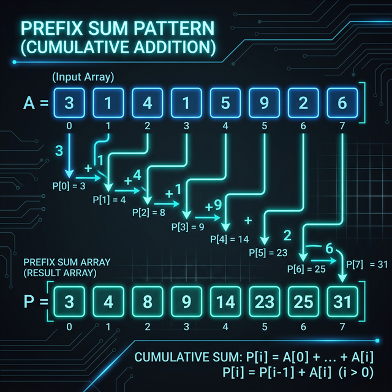

Prefix Sum

The Core Idea: Precompute cumulative sums of an array so that the sum of any contiguous subarray can be queried in O(1) time instead of O(N).
Used for answering multiple range sum queries efficiently. Instead of re-calculating the sum of a subarray iteratively, we precompute a cumulative sum array.
- "Sum of subarray or range [i, j]"
- "Find the number of subarrays that sum to K" (often combined with a Hash Map)
Reasoning: Brute Force to Optimized
Whenever asked for the sum between index i and j, use a
loop to add the elements.
Time: O(N) per query
The sum from i to j is simply the sum from
0 to j MINUS the sum from 0 to
i-1. If we know the sum from the start to every index, we can find
any sub-range sum immediately.
Create a prefix array where prefix[x] is the sum of
elements up to x. For continuous queries, use
prefix[j] - prefix[i-1].
Time: O(1) per query
If the array values are constantly being updated dynamically between queries.
Updating a single element requires updating O(N) prefix sums. Use a
Segment Tree or Binary Indexed Tree (Fenwick Tree)
instead.
The Universal Masterclass Template
class PrefixSum:
def __init__(self, nums):
# We make the prefix array 1 element larger to handle edge cases easily
# prefix[i] will store the sum of all elements before index i
self.prefix = [0] * (len(nums) + 1)
for i in range(len(nums)):
self.prefix[i + 1] = self.prefix[i] + nums[i]
def sumRange(self, left, right):
# The sum from index 'left' to 'right' inclusive
# is the total sum up to 'right + 1' minus the total sum BEFORE 'left'
return self.prefix[right + 1] - self.prefix[left]Relevant Blind 75 Problems
Walkthrough: Range Sum
Input: [2, 4, 6, 8] Prefix arrays: [0, 2, 6, 12, 20] Sum from index 1 to 2 (4+6 = 10) Prefix calculation: Prefix[3] - Prefix[1] = 12 - 2 = 10.
⚠️ Common Interview Mistakes
- Forgetting to initialize the Prefix array with a default initial value of 0 to handle sums starting from the 0th index.
- Using a nested loop when a Hash Map tracking previous prefix sums is required.